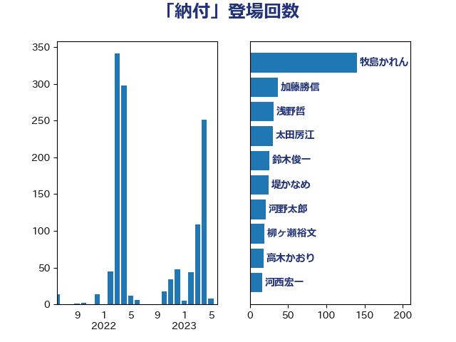

単語「納付」

| 牧島かれん | 自由民主党 | 140 回 |
| 加藤勝信 | 自由民主党 | 37 回 |
| 浅野哲 | 国民民主党 | 31 回 |
| 太田房江 | 自由民主党 | 30 回 |
| 鈴木俊一 | 自由民主党 | 26 回 |
| 堤かなめ | 立憲民主党 | 25 回 |
| 河野太郎 | 自由民主党 | 21 回 |
| 柳ヶ瀬裕文 | 日本維新の会 | 19 回 |
| 高木かおり | 日本維新の会 | 18 回 |
| 河西宏一 | 公明党 | 16 回 |
| 岸田文雄 | 自由民主党 | 15 回 |
| 松本剛明 | 自由民主党 | 14 回 |
| 後藤茂之 | 自由民主党 | 12 回 |
| 岸真紀子 | 立憲民主党 | 12 回 |
| 古川俊治 | 自由民主党 | 12 回 |
| 東徹 | 日本維新の会 | 10 回 |
| 川田龍平 | 立憲民主党 | 10 回 |
| 平沼正二郎 | 自由民主党 | 9 回 |
| 中谷一馬 | 立憲民主党 | 9 回 |
| 田中健 | 国民民主党 | 8 回 |
| 小林史明 | 自由民主党 | 8 回 |
| 石井拓 | 自由民主党 | 7 回 |
| 上野賢一郎 | 自由民主党 | 7 回 |
| 西村康稔 | 自由民主党 | 6 回 |
| 藤巻健太 | 日本維新の会 | 6 回 |
| 稲津久 | 公明党 | 6 回 |
| 宮本徹 | 日本共産党 | 6 回 |
| 阿部司 | 日本維新の会 | 5 回 |
| 芳賀道也 | 国民民主党 | 5 回 |
| 石橋林太郎 | 自由民主党 | 5 回 |
| 末松信介 | 自由民主党 | 5 回 |
| 山本博司 | 公明党 | 5 回 |
| 齋藤健 | 自由民主党 | 4 回 |
| 若松謙維 | 公明党 | 4 回 |
| 緒方林太郎 | 無所属 | 4 回 |
| 田島麻衣子 | 立憲民主党 | 4 回 |
| 永岡桂子 | 自由民主党 | 4 回 |
| 梅村聡 | 日本維新の会 | 4 回 |
| 枝野幸男 | 立憲民主党 | 4 回 |
| 大西健介 | 立憲民主党 | 4 回 |
| 大家敏志 | 自由民主党 | 4 回 |
| 大口善徳 | 公明党 | 4 回 |
| 塩川鉄也 | 日本共産党 | 4 回 |
| 伊藤岳 | 日本共産党 | 4 回 |
| 高橋千鶴子 | 日本共産党 | 3 回 |
| 角田秀穂 | 公明党 | 3 回 |
| 藤田文武 | 日本維新の会 | 3 回 |
| 羽生田俊 | 自由民主党 | 3 回 |
| 細田博之 | 自由民主党 | 3 回 |
| 田畑裕明 | 自由民主党 | 3 回 |
| 池畑浩太朗 | 日本維新の会 | 3 回 |
| 櫛渕万里 | れいわ新選組 | 3 回 |
| 横沢高徳 | 立憲民主党 | 3 回 |
| 本村伸子 | 日本共産党 | 3 回 |
| 斉藤鉄夫 | 公明党 | 3 回 |
| 岬麻紀 | 日本維新の会 | 3 回 |
| 山添拓 | 日本共産党 | 3 回 |
| 宮崎勝 | 公明党 | 3 回 |
| 安江伸夫 | 公明党 | 3 回 |
| 倉林明子 | 日本共産党 | 3 回 |
| 井上貴博 | 自由民主党 | 3 回 |
| 高野光二郎 | 自由民主党 | 2 回 |
| 音喜多駿 | 日本維新の会 | 2 回 |
| 金子俊平 | 自由民主党 | 2 回 |
| 野間健 | 立憲民主党 | 2 回 |
| 道下大樹 | 立憲民主党 | 2 回 |
| 西銘恒三郎 | 自由民主党 | 2 回 |
| 西田昌司 | 自由民主党 | 2 回 |
| 西岡秀子 | 国民民主党 | 2 回 |
| 笠井亮 | 日本共産党 | 2 回 |
| 礒崎哲史 | 国民民主党 | 2 回 |
| 田村貴昭 | 日本共産党 | 2 回 |
| 田村まみ | 国民民主党 | 2 回 |
| 池下卓 | 日本維新の会 | 2 回 |
| 村田享子 | 立憲民主党 | 2 回 |
| 杉尾秀哉 | 立憲民主党 | 2 回 |
| 早稲田ゆき | 立憲民主党 | 2 回 |
| 徳永久志 | 立憲民主党 | 2 回 |
| 岩渕友 | 日本共産党 | 2 回 |
| 守島正 | 日本維新の会 | 2 回 |
| 大島九州男 | れいわ新選組 | 2 回 |
| 吉田久美子 | 公明党 | 2 回 |
| 古川禎久 | 自由民主党 | 2 回 |
| 佐々木さやか | 公明党 | 2 回 |
| 井坂信彦 | 立憲民主党 | 2 回 |
| 中谷真一 | 自由民主党 | 2 回 |
| 中西健治 | 自由民主党 | 2 回 |
| 一谷勇一郎 | 日本維新の会 | 2 回 |
| 高木宏壽 | 自由民主党 | 1 回 |
| 馬淵澄夫 | 立憲民主党 | 1 回 |
| 阿部弘樹 | 日本維新の会 | 1 回 |
| 門山宏哲 | 自由民主党 | 1 回 |
| 鈴木馨祐 | 自由民主党 | 1 回 |
| 鈴木義弘 | 国民民主党 | 1 回 |
| 金子恭之 | 自由民主党 | 1 回 |
| 野村哲郎 | 自由民主党 | 1 回 |
| 遠藤良太 | 日本維新の会 | 1 回 |
| 足立康史 | 日本維新の会 | 1 回 |
| 谷田川元 | 立憲民主党 | 1 回 |
| 藤岡隆雄 | 立憲民主党 | 1 回 |
| 蓮舫 | 立憲民主党 | 1 回 |
| 萩生田光一 | 自由民主党 | 1 回 |
| 紙智子 | 日本共産党 | 1 回 |
| 稲富修二 | 立憲民主党 | 1 回 |
| 秋本真利 | 自由民主党 | 1 回 |
| 石橋通宏 | 立憲民主党 | 1 回 |
| 田村憲久 | 自由民主党 | 1 回 |
| 片山大介 | 日本維新の会 | 1 回 |
| 津島淳 | 自由民主党 | 1 回 |
| 江島潔 | 自由民主党 | 1 回 |
| 櫻井周 | 立憲民主党 | 1 回 |
| 松野博一 | 自由民主党 | 1 回 |
| 杉久武 | 公明党 | 1 回 |
| 後藤祐一 | 立憲民主党 | 1 回 |
| 平木大作 | 公明党 | 1 回 |
| 川合孝典 | 国民民主党 | 1 回 |
| 岡本三成 | 公明党 | 1 回 |
| 山田美樹 | 自由民主党 | 1 回 |
| 山田勝彦 | 立憲民主党 | 1 回 |
| 山東昭子 | 自由民主党 | 1 回 |
| 山岡達丸 | 立憲民主党 | 1 回 |
| 小沼巧 | 立憲民主党 | 1 回 |
| 小川淳也 | 立憲民主党 | 1 回 |
| 和田政宗 | 自由民主党 | 1 回 |
| 友納理緒 | 自由民主党 | 1 回 |
| 佐藤英道 | 公明党 | 1 回 |
| 伊佐進一 | 公明党 | 1 回 |
| 井原巧 | 自由民主党 | 1 回 |
| 五十嵐清 | 自由民主党 | 1 回 |
| 中根一幸 | 自由民主党 | 1 回 |
| 上野通子 | 自由民主党 | 1 回 |
| たがや亮 | れいわ新選組 | 1 回 |